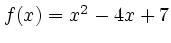

plt plots (x, y) coordinate pairs, but often you may wish to plot a continuous function of x expressed symbolically. This can be done easily using two small programs, ftable and pltf, both of which are included with plt.
Both of these programs accept a symbolic function definition (as the first command-line argument) and up to three optional arguments: the lower and upper bounds for the independent variable (which is always x), and the x-increment.
ftable produces a script that generates a table of coordinate pairs when processed by the standard bc utility. This table can then be used as input to plt. For example, the command:
ftable 'x^2 - 4*x + 7' 0 5 .1 | bc -l
produces on its standard output a table of values of the function
 for values of  between 0 and 5, with a step
size of .1 in
between 0 and 5, with a step
size of .1 in  . Note that the independent variable in the function
is always x, and that multiplication must be indicated
explicitly using *. In this example, the output begins like this:
. Note that the independent variable in the function
is always x, and that multiplication must be indicated
explicitly using *. In this example, the output begins like this:
0 7 .1 6.61 .2 6.24 .3 5.89 .4 5.56 .5 5.25 .6 4.96 .7 4.69
The bc utility is an arbitrary-precision calculator included in all versions of Unix and GNU/Linux, and available for Mac OS X (from http://fink.sourceforge.net/) and for MS-Windows (as part of the free Cygwin package from http://www.cygwin.com/). See the documentation for bc for details on the function syntax.
The shell script pltf is included in the misc directory of the plt distribution. pltf accepts the same arguments as ftable (the function, the lower and upper bounds for x, and the x-increment), but it invokes bc and plt to produce a neatly labelled plot of your function, as illustrated in figure 2.9:
pltf 's(40*x)*s(3*x)' 0 5 .01